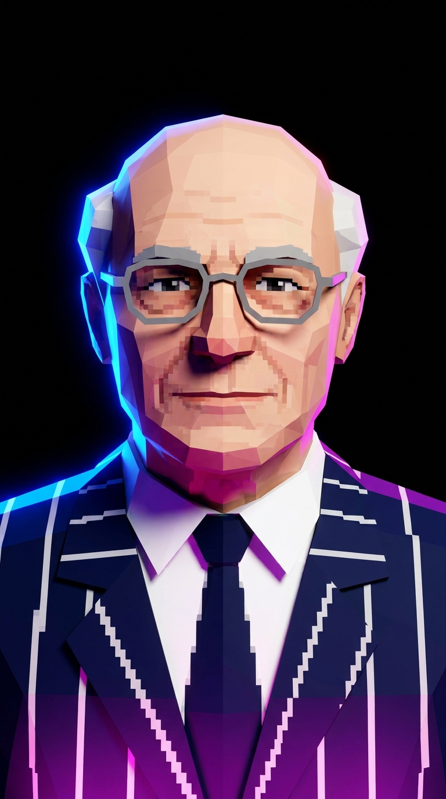
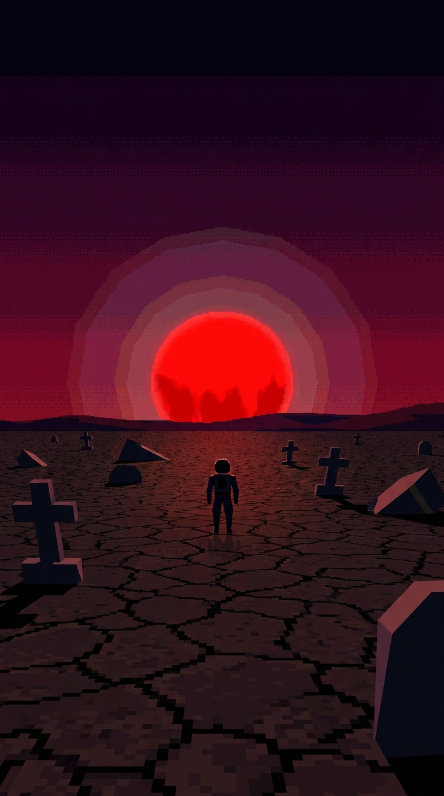
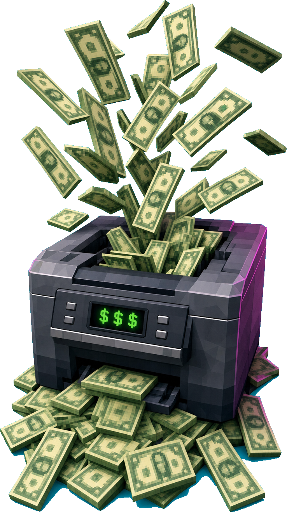
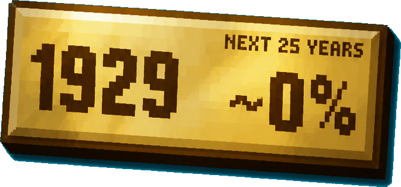
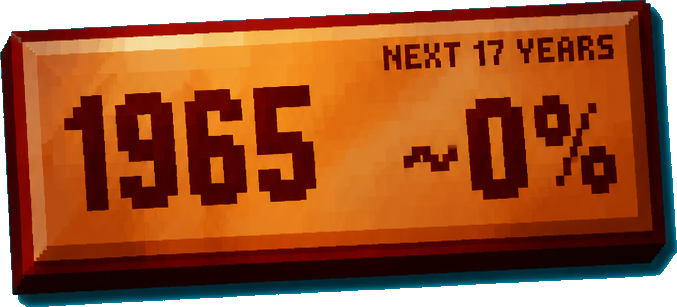
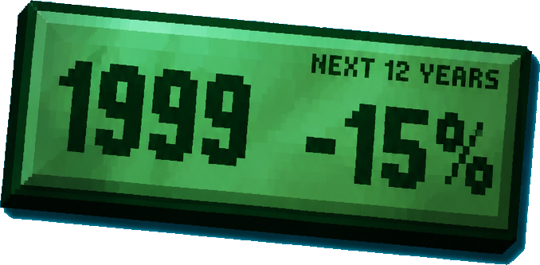
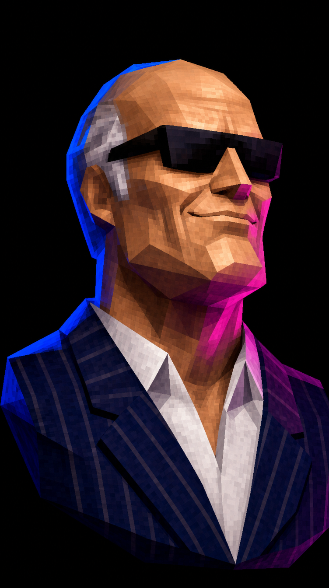

▮ PLAYER 1 ▮
WARREN BUFFETT
WARREN BUFFETT
WARREN BUFFETT
HAS A
RECESSION
SIGNAL.
HAS A
RECESSION
SIGNAL.
HAS A
RECESSION
SIGNAL.
BUFFETT
INDICATOR
▮ WALL STREET CALLS IT ▮
▮ MARKET CAP ÷ GDP ▮
÷
$0T
MARKET CAP
$0T
GDP
▮ BUFFETT, FORTUNE 2001 ▮
REC
★ ORACLE
▷ ON THE BUFFETT INDICATOR
"THE
BEST
SINGLE
MEASURE."

▮ S&P 500 · 2000 — 2007 ▮
2000
PORTFOLIO VALUE
$1,527
▼ −49%
▾ SEVEN YEARS OF
NOTHING.
1,527
−49%
777
BREAK-EVEN
1,527
2000
'01
'02
'03
'04
'05
'06
'07
▼ DOTCOM PEAK
2000
▾ FLATLINE
7 YEARS
1,500 —
1,000 —
750 —

▮ TODAY · MARKET CAP / GDP ▮
EVERY US STOCK
$62T
BUFFETT INDICATOR · TODAY
209%
OF
U.S. GDP
▮ HISTORICAL · WHEN RATIO ≥ 200% ▮



FLAT OR NEGATIVE.
★ EVERY TIME ★

▮ THE ORACLE STAYS LIQUID ▮
RECORD CASH
RECORD CASH
RECORD CASH
$380B
$380B
$380B
▮ BUFFETT'S PLAYBOOK ▮
REJECTED
REJECTED
SELECTED ✓
▮ THE BUFFETT INDICATOR · END ▮
DON'T SELL EVERYTHING.
BLOOM
▷ TAP TO INSTALL